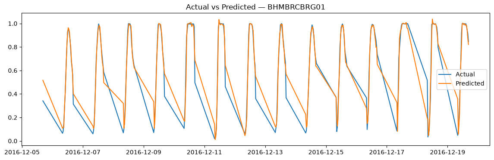

Overview
This project uses the UCI Parking Birmingham dataset: 35,717 occupancy readings from 30 car parks in Birmingham, UK, collected between October and December 2016. I cleaned the raw readings into a regular time series and then trained a model to forecast each car park's occupancy rate 30 minutes ahead during business hours.
Data Cleaning
- Removed 216 exact duplicate rows and parsed
LastUpdatedinto real timestamps. - Found that readings arrived about every 33 minutes. The data showed this was a 30-minute polling schedule plus a small delay, so I resampled each car park onto a fixed 30-minute grid.
- Limited the data to operating hours (8:00–16:30). Readings at 7:00 were 83% missing because the collection system was still starting up.
- Dropped 2 unreliable car parks (
NIA North,BHMBRTARC01). They had short histories, came from a separate collection pipeline, and accounted for all 12 negative occupancy readings. - Measured how long each gap in the data lasted before filling any. I used linear interpolation only for gaps of 2 hours or less and flagged every filled row with
was_imputed. Longer gaps were left out rather than guessed at, which cut missing data from 33.4% to 7.5%. - Fixed 357 readings where occupancy was above 100%: the stated capacity of some car parks was too low, so I raised it to the highest occupancy actually observed.
Features
The target is OccupancyRate (occupancy divided by capacity), so car parks of different sizes can share one model. Features include the hour, the day of the week, a weekend flag, the car park's ID and capacity, and the rate 30 minutes, 1 hour and 1 day earlier, plus a 2-hour rolling mean. The rolling mean is shifted by one step so a row's own value never leaks into its features.
Model & Results
The last two full weeks (December 5–18) were held out for testing. The baseline predicts no change from 30 minutes earlier. I compared a single LightGBM model trained on all 28 car parks with XGBoost, and with a separate Prophet model for each car park.
| Model | MAE | RMSE |
|---|---|---|
| Baseline (no change) | 0.048 | 0.083 |
| LightGBM (all car parks) | 0.021 | 0.037 |
| XGBoost (all car parks) | 0.021 | 0.038 |
| Prophet (one per car park) | 0.076 | 0.098 |
LightGBM cut the baseline error by 56%. Prophet did worse than the baseline: with only about 2 months of history per car park, it couldn't reliably pick out daily and weekly patterns. Training one model on all car parks lets it learn from their shared patterns. A small hyperparameter sweep moved MAE by less than 0.0004, so the model is close to the limit of this feature set.

Key Findings
- Error is lowest at midday (MAE about 0.011–0.015) and highest at 8:00 and 16:00, when occupancy rises or falls fastest.
- Weekends are harder to predict than weekdays (Saturday MAE 0.027 vs. 0.015 on Wednesday).
- The car parks with the highest error are the same ones with the capacity problems found during cleaning.
- The residuals average almost zero (mean 0.003), so the model doesn't consistently predict too high or too low.
Limitations
The model forecasts 30 minutes ahead during business hours (8:00–16:30) only. It hasn't been tested for longer horizons or overnight. It also tends to predict a slower decline than actually happens in the late afternoon.